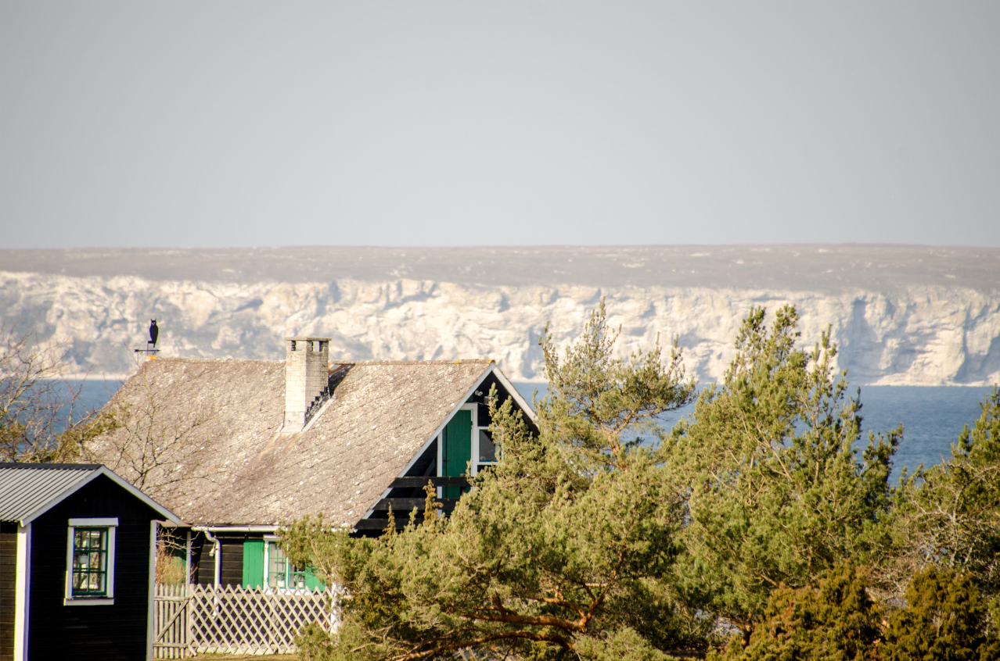

Djupviks hamn ligger på Gotlands västkust nästan rakt öster om Lilla
Karlsö. Hamnen är otroligt vackert belägen i anslutning till ett
gammalt Gotländskt fiskeläge bestående av fiskebodar från sent
1800-tal. Husen är grupperade i tre rader, mellan dem ligger
gistgarden där man torkar nät och närmast stranden ligger båthusen.
Från fiskeläget har man fri utsikt mot de båda Karlsöarna.

Ansvaret för hamnen och fiskeläget har Djupviks hamnförening, som är
en ideell förening som aktivt verkar för att bibehålla och utveckla
Djupvik som fiskehamn och som fritidsbåtshamn för de många närboende
och sommarboende.
Föreningen driver en glasskiosk och kaffeservering på sommartid i
ett gammalt båthus vid hamnen. Ett par hundra meter ovanför hamnen
ligger Djupviks Hotell, ett hotell med restaurang och bra standard.
Det finns även toaletter i hamnen varav en som är
tillgänglighetsanpassad för rullstolar och rollatorer.
Senaste nytt
Hamnjobb
2019-04-06
Lördagen den 6 april samlades ett antal av föreningens medlemmar för
arbete i hamnen. Kiosken, kajerna och stranden städades. Kajer
lagades och gräs brändes. Diverse fix på många håll. Vädret var bra
och korven god. Det som återstår inför säsongen är att ta bort släke
från stranden, att sätta upp ramp vid kiosken och att fylla kiosken
med varor.
Succé för hamnens dag!
2018-07-16Foto: Björn Hjernquist
Lördagen den 16 juli arrangerade föreningen Djupviks hamn i Eksta
”Hamnens dag” i Djupvik. Vårt arbete har med åren alltmer också
inriktats på att alla besökare, även de som kommer landvägen skall
trivas i det vackra hamnområdet. Nu bjöds det in till ”Hamnens dag”.
På plats fanns sjöfartsverkets SAR-helikopter, Sjöräddningens båt
Hwitstjärna, släckningsbil från räddningstjänsten i Klintehamn, russ
från Gannarve och ett antal loppisförsäljare. Aktiviteten lockade
ett stort antal besökare.
Uppskattningsvis 1000 besökare sökte sig under dagen till Djupvik.
Intresset var stort för de besökande organisationerna som
informerade och alla fick möjlighet att titta och ställa frågor.
Barnen fick rida, de bjöds på bulle och dricka och många prövade
lyckan i fiskdammen. Det fanns möjlighet att handla kaffe, korv,
dricka och glass. Många dröjde sig kvar i hamnområdet och trivdes i
det inledningsvis lite blåsiga men vackra vädret.